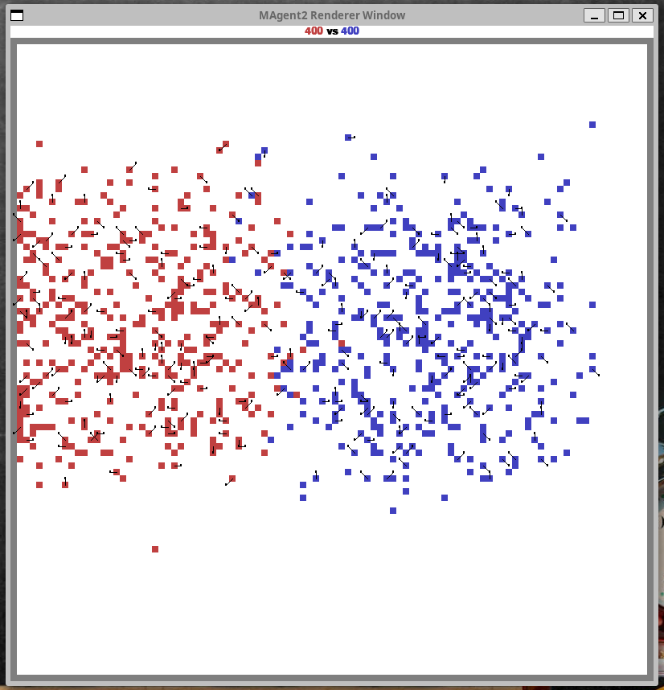

June 2025#
Multi-Agent Reinforcement Learning#
MAgent is a scalable reinforcement learning platform designed to support research in many-agent environments, enabling simulations with thousands of agents on a single GPU server. It facilitates the study of emergent collective behaviors (e.g., communication, coordination, altruism) and optimal policy learning in large-scale AI societies.
Applicability to War-Games Research#
Scalability for Complex Military Simulations
Emergent Tactical Intelligence
Efficient Training Techniques
Validation of Collective Tactics
Future Directions#
MAgent bridges theoretical multi-agent RL and military applicability, offering a foundation for next-generation combat simulations where collective intelligence drives tactical innovation157.
Below are sample runs for different Blue / Red team sizes:

https://cdn.aaai.org/ojs/11371/11371-13-14899-1-2-20201228.pdf
https://www.sciencedirect.com/science/article/pii/S0920379624000140
https://web.stanford.edu/class/psych209/Readings/SuttonBartoIPRLBook2ndEd.pdf
[https://www.hse.ru/data/2025/06/04/2002461638/Малышева_статья 3.pdf](https://www.hse.ru/data/2025/06/04/2002461638/Малышева_статья 3.pdf)
https://www.sciencedirect.com/science/article/abs/pii/S0020025523011192